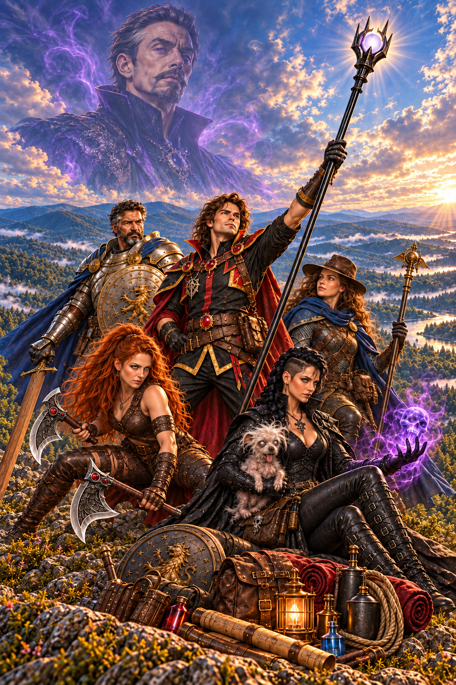
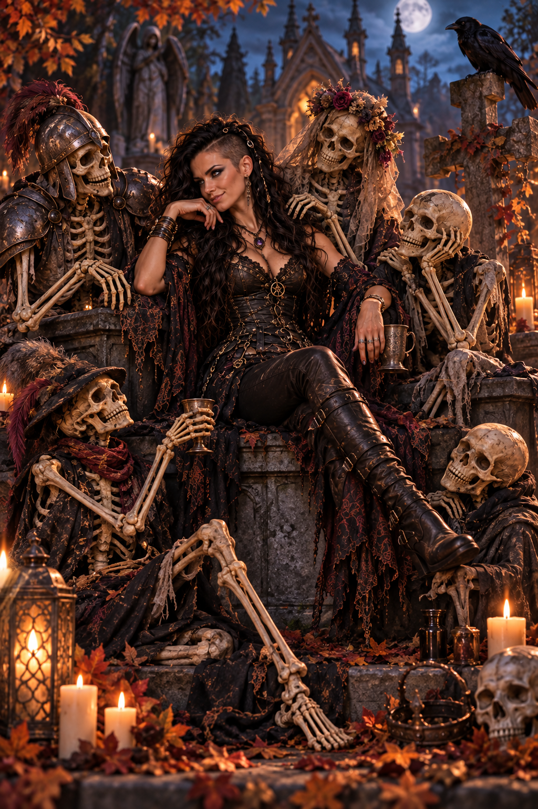
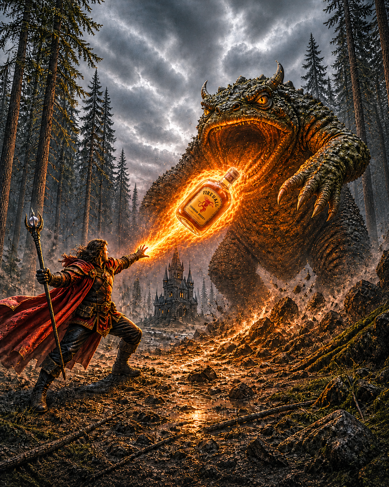
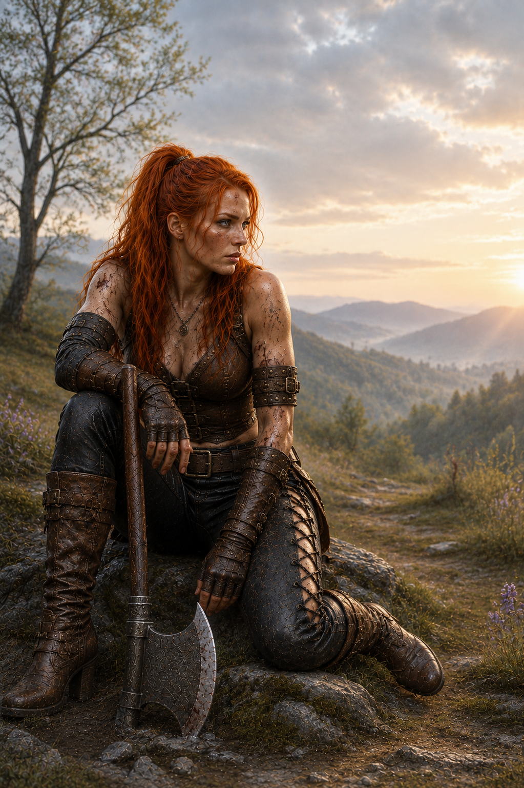
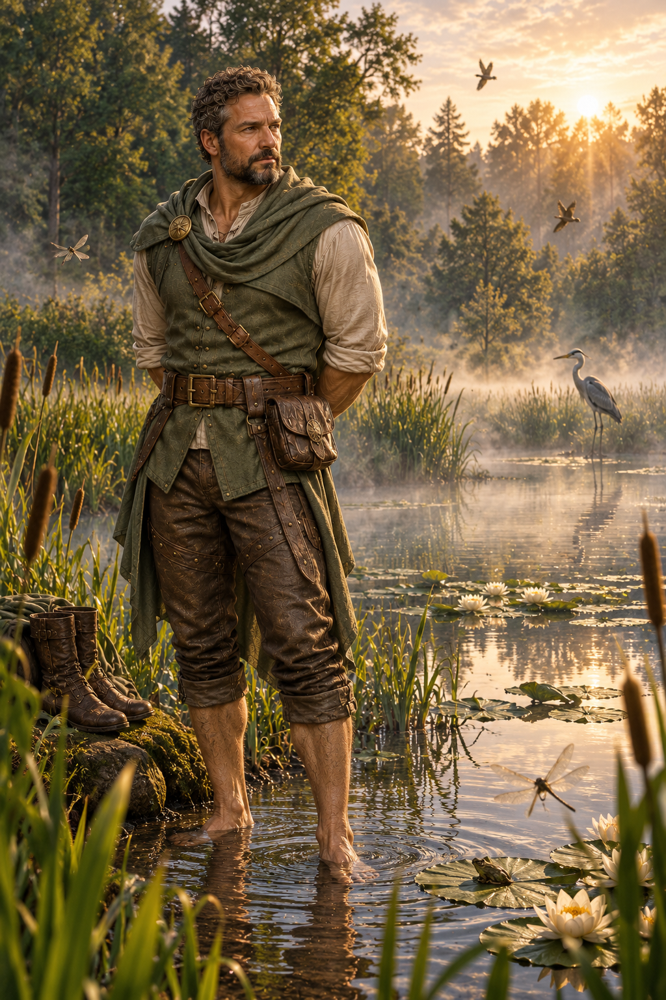
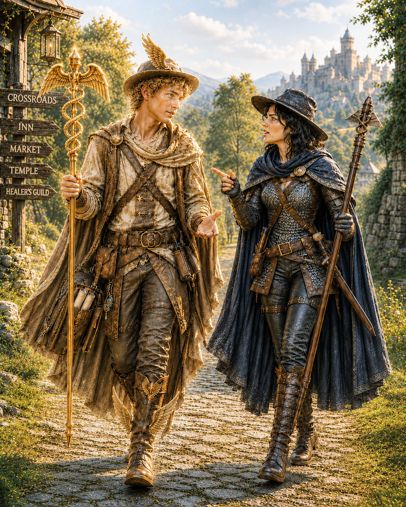
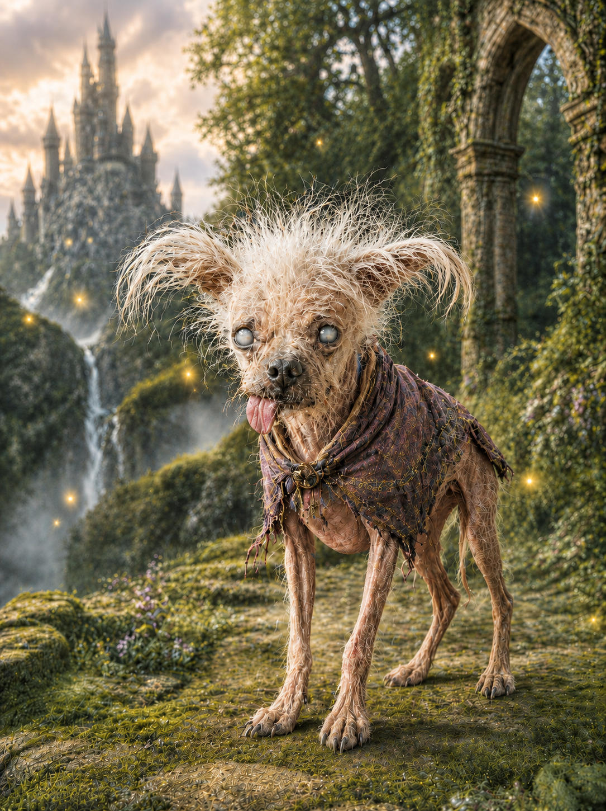

Heart of Aldaria
Magic, mayhem, and something far more dangerous... falling in love.

When a mission from the Dragon Council sends an unlikely band of adventurers into the dangerous northern lands, nobody expects things to go according to plan. They'd just prefer the plan survive long enough to be recognizable.
Magnes is a sorcerer with powerful magic, questionable judgment, and a talent for finding trouble. Marla is a necromancer who would generally rather be left alone with her dog and the dead. Galen is a paladin trying to do the right thing in a world that rarely makes that simple. Anya is a warrior far from the life she once knew, and Tally is a cleric of Hermes whose god occasionally takes a rather personal interest in her affairs.
Together, they find themselves caught in something far larger than the mission that brought them together, involving dragons, kingdoms, old secrets, dangerous magic, and forces capable of changing Aldaria itself.
Assuming they don't kill each other first.
The Heart of Aldaria is a fantasy adventure about found family, unlikely love, terrible decisions, and the people who become home along the way.
Meet the Party
Heroes are a matter of perspective. These are the people who ended up with the job.

Marla Al-Vutha
Marla is perfectly comfortable with the dead. It's the living who tend to complicate things.
Raised in the Ulkarian Empire and armed with powerful necromantic magic, a sharp tongue, and an extremely flexible interpretation of what constitutes an appropriate solution, Marla isn't particularly interested in being anyone's hero. Unfortunately, adventure keeps happening to her anyway.
Usually with Spud nearby.

Magnes
Magnes can talk his way into almost anything.
Getting back out is another matter.
Charming, impulsive, magically gifted, and equipped with enough confidence to compensate for several people, Magnes approaches danger with the deeply questionable belief that things will probably work out.
Sometimes they even do.
The rest of the time, at least it'll make a good story.

Anya
Anya knows weapons.
Swords, axes, bows, knives. If someone invented a new way to kill something yesterday, give her five minutes and she'll probably figure that out too.
But the warrior traveling through Aldaria carries a history stranger than most of her companions realize, and beneath the armor, stubbornness, and formidable talent for violence is someone trying to discover where she belongs in a world that was never supposed to be hers.

Galen
Galen has spent decades trying to leave the world a little better than he found it.
The world has not always cooperated.
Steady where his companions are chaotic, compassionate without being naive, and considerably more dangerous than his quiet demeanor suggests, Galen often finds himself serving as the party's conscience.
Whether the party actually listens to him is an entirely separate matter.
Of course, Galen has one complication his companions don't: he wasn't born in Aldaria at all. He arrived here from 1980s Earth, leaving him to navigate a world of dragons, magic, gods, and monsters with memories of a very different life behind him.

Tally
Tally serves Hermes, god of travelers, messengers, merchants, thieves, and anyone else who understands that sometimes the road itself matters more than the destination.
Warm, capable, and fiercely devoted to helping people, she's often the gentlest member of the party.
This should not be confused with harmless.
And unlike most clerics, Tally occasionally gets the opportunity to argue her case directly with management.

Spud
Spud is Marla's elderly, blind Chihuahua mix.
He has cloudy eyes, almost no teeth, very little hair, a tongue that rarely stays inside his mouth, and absolutely no intention of dying.
Marla has made certain of that last part.
He spends much of his time riding in Marla's magically enhanced puppy pouch, coughing at inconvenient moments and demonstrating that necromancy occasionally has perfectly reasonable applications.
For reasons nobody has ever managed to explain, Magnes appears to be the only person in the world Spud actively hates. Despite being mostly blind and mostly deaf, the ancient little creature possesses an almost supernatural ability to locate Magnes under virtually any circumstances.
Usually so he can growl at him.
He is a good boy.
Mostly.